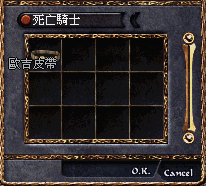
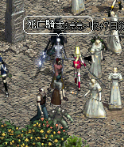
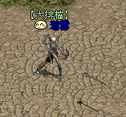
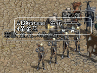

|
2002年10月29日
香港太陽神出現歐吉皮帶

香港在更新後，終於出現歐吉皮帶了！持有者是死亡騎士，據聞歐吉皮帶可以增加約20%的負量呢！
若雪成為香港太陽神首名黑暗妖精

香港太陽神首名黑暗妖精可以說是敏地妖若雪與體火妖Goodwellar之爭，最初Goodwellar是稍稍領先的，可惜在臨升等級前卻Lag死兩次，結果若雪成功突圍，成為香港伺服器首名52級的黑暗妖精！在此恭喜玩家若雪，同時亦希望Goodwellar不要放棄，快點兒成為烈炎死騎吧！
韓國測試伺服器新試鍊Part 2
今天韓國測試伺服器有數十個文字檔案更新，而文字內容包含新試鍊的資料。
來源：Nue's Lineage（留言板）
新試練 Part II
經過一段時間的等待,NC終於"快要"開始於KO Test Server 測試另一批新的試練嚕\
第二批的試練,難度有比第一批試練的難度來的高
騎士:紅騎士之盾,紅騎士之劍
-->首先找甘特對話,之後去打島上的楊果里恩取得它的"爪子",即可獲得"紅騎士之劍"
-->再去銀騎村找傑瑞德(關鍵物品:紅騎劍),接受試練後到狼人洞取得"復活藥水",再去找Jim,給它復活藥水後,可得"感恩的信",再去找傑瑞德,把信遞給他即可得"紅騎士之盾"
法師:水晶魔法杖
-->到象牙塔找塔拉斯接受試練(目前還不清楚任務的許多內容),必須取得不死系的骨頭和不死系的骨頭碎片(神秘魔法杖好像也要 = =")
王族:魔法書(呼喚盟友)
-->接受風木村的Aria的請求,之後去蟻洞(還不確定)找守門蟻,要求傳送到"變種巨蟻洞"(此蟻洞有變種兵蟻,變種蟻女皇出沒),到了之後去尋找"村民的遺物",之後回來交給Aria,即可獲得"魔法書(呼喚盟友)"
妖精:神秘的水晶球
-->找精靈公主(精靈女皇的女兒)要求傳送到"黑暗法師(也有可能是黑暗精靈)的秘密洞窟"(注意:黑暗法師會有他召的"火精靈,水精靈,風精靈,地精靈"保護他,因此要特別小心),到那裡擊敗它取得"受詛咒的精靈魔法書",會來交給迷幻森靈之母,可得"神秘的水晶球"
以上道具的功用均還不知道,所以問我也沒用...
另外此第二批試練的內容還有可能會再做修正的可能,上面我所述說的只是一個藍本 |